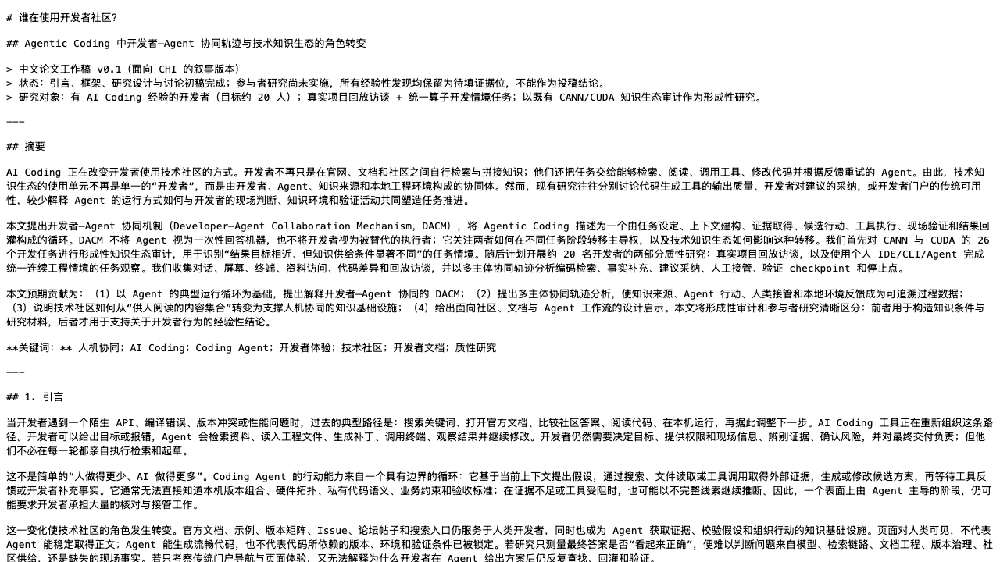
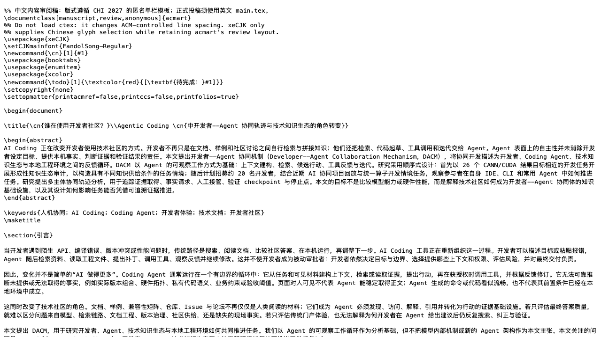
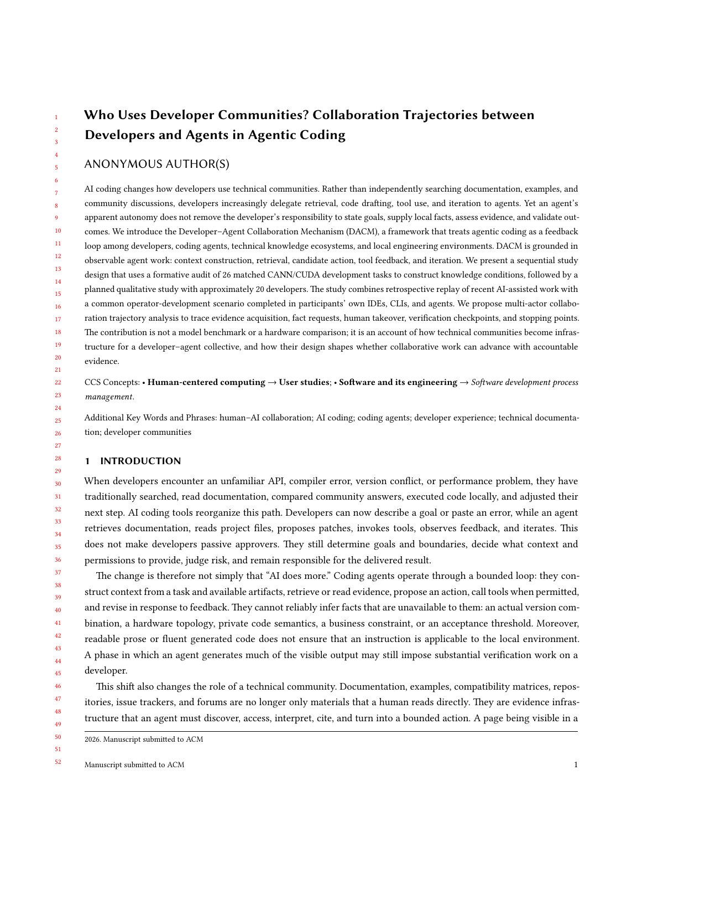

CURRENT DECISION
先拿到协同轨迹，再完成论文论证。
初稿和测试框架已经具备；决定 CHI 是否成立的，是约 20 位开发者在真实工具中留下的接管、验证、换源与事实回灌证据。
形成性审计已完成
构造知识条件
构造知识条件
用户研究待启动
取得轨迹证据
取得轨迹证据
发现与图表待编码
形成机制解释
形成机制解释
英文投稿最后阶段
匿名提交
匿名提交
从研究准备、中文初稿到投稿节点：这一页按实际推进顺序组织，先知道现在缺什么，再进入相应材料。
初稿和测试框架已经具备；决定 CHI 是否成立的，是约 20 位开发者在真实工具中留下的接管、验证、换源与事实回灌证据。
参与者使用自己的 IDE / CLI / Agent。研究不提供伪造的 AI 能力，也不依赖真实算卡；它记录协同如何推进和在哪里断裂。
中文稿负责讨论主张、方法和图表。英文匿名稿作为格式底稿；待真实研究完成后，沿同一结构翻译与压缩。

研究问题、Agent 工作机制、DACM、Study 0–2、编码框架、设计启示与局限均已建立。
结构已完成
沿 CHI 的匿名单栏章节组织，供内容、章节与图表位置讨论；不作为正式投稿文件。
中文内容确认中
已按官方 acmart 单栏匿名格式渲染；发现章节明确保留 TODO，避免伪造研究结果。
完成 2–3 人试跑；确定同意范围、主持话术、工程情境、屏幕/对话记录边界。
产出：冻结版材料、排期表、编码备忘录模板完成约 10 人。每天 2 人、两位研究者并行时可控；每位结束当天完成轨迹表与初步备忘。
产出：10 条协同轨迹、逐人摘要、初始开放编码完成其余约 10 人；同时对前半样本合并代码、标出负例与待追问问题。
产出：20 条轨迹、引文池、跨案例代码本 v1聚合 3–4 个机制发现，绘制轨迹图和机制图；补方法、研究伦理、局限与设计启示。
产出：中文结果稿、图表定稿、匿名化清单翻译压缩为 CHI 匿名单栏稿；完成引用、匿名检查、补充材料与最终 PDF。
09 / 10 AoE：论文、视频与补充材料提交节奏约束：每完成一位参与者，当天必须完成轨迹表和研究备忘；否则最后一周会同时堆积转录、编码、写作与英文整理，无法按时收束。
分析单位不是“访谈回答”或“任务得分”，而是一次开发者—Agent 协同任务中证据、行动、验证与接管如何连续发生。
把录屏、终端、Agent 对话、任务后回放与访谈转录按时间合并。为每位参与者标出任务目标、转折点和未解决点。
得到：20 份个案轨迹表＋可定位的原始证据索引。在轨迹上编码首次提问、资料来源、现场事实需求、上下文回灌、人工接管、验证 checkpoint、换源与停止点；记录触发条件与后果。
得到：事件编码本＋每类事件的频次、位置与原始片段。比较不同经验、不同 Agent 使用方式和两类知识条件下的轨迹：哪些模式反复出现，何时不出现，哪些人能绕过、哪些人被卡住。
得到：候选协同机制、边界条件与反例集。将每个机制发现写成“条件 → 协同行为 → 结果”的论证链，用典型轨迹、对照个案和匿名引文相互支撑，并回到知识基础设施含义。
得到：3–4 个发现、轨迹图/机制图、引文池与设计启示。初审的硬条件是英文、匿名、单栏、独立成立。真正决定 9 月能否提交的，是 8 月内能否完成足够的用户研究证据。